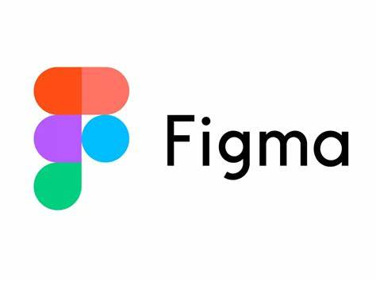

Site Web Jo
Dans le cadre d'un Projet nous avons réalisé un site web sur les Jeux Olympiques 2024. Le projet a été divisé en plusieurs pages, chacune étant développée par un membre de l’équipe.
Différentes étapes ont été suivies pour assurer une conception structurée et cohérente :
- Écoute d’un témoignage & Expression des besoins : Recueil des informations pour comprendre les attentes des utilisateurs et définir le contenu nécessaire pour chaque page.
- Maquettage avec Figma : Création des maquettes pour visualiser la structure et le design du site.
- Développement en HTML & CSS : Intégration du site en respectant le maquettage, avec un fichier CSS commun pour assurer une uniformité visuelle entre les pages.
Maquettage
Après avoir défini les besoins, nous avons utilisé Figma pour concevoir un prototype visuel du site.
L'objectif de ce maquettage était de :
- - Réaliser une Charte graphique.
- - Assurer une cohérence graphique entre toutes les pages du site.
- - Prévoir une ergonomie optimisée pour la navigation.

Figma
Une fois le maquettage terminée, nous avons commencé la réalisation du site en HTML et CSS.
Conception

Différentes étapes ont été suivies pour reproduire notre Maquettage :
- - HTML : Nous avons structuré la page en respectant la maquette, en utilisant des balises adaptées (section, article, figure...).
- - CSS : Un fichier CSS commun a été utilisé pour uniformiser le style sur toutes les pages (mêmes couleurs, typographies, marges...).
- - Responsive : Nous avons également préparé un format responsive afin de rendre le site web accessible sur Android.
Site Web
Retour